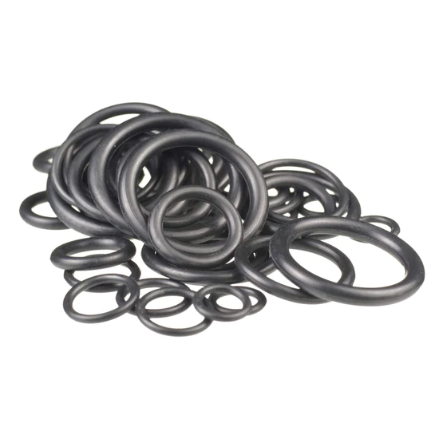
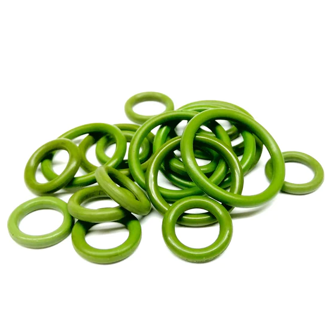
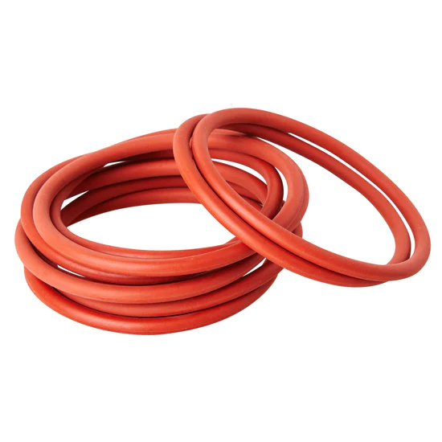
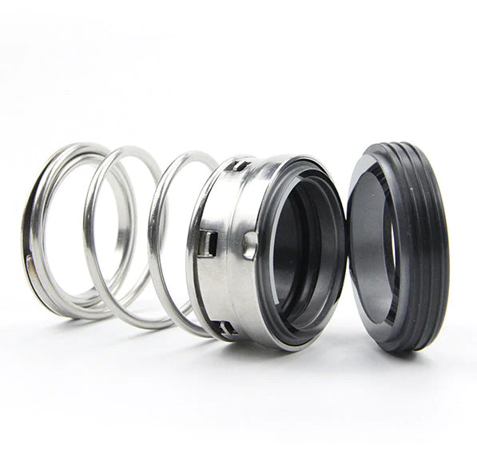

We supply an extensive range of Nitrile, Viton and Silicone o-rings, whilst specialising in the design,
manufacture and supply of mechanical, hydraulic and specialists seals, including gland packing, encapsulated o-rings,
custom gaskets.
Our seals are used in a wide range of new and old equipment worldwide to prevent liquids and gases escaping
into the environment. We manufacture our seals to the highest standards to deliver high performing and long
lasting seals for our customers.
O-Rings
We stock a wide variety of o-ring diameters, thicknesses and materials.

Nitrile O-Rings
Offering excellent resistance and performance in a wide range of industries and applications.
They are available in a variety of shore hardness and specialist compounds, as well as metric
and imperial sizes. As a synthetic rubber material, nitrile is resistant to common chemicals,
temperatures ranging from -40c to +108c, and even used in aeronautical and nuclear applications.
Shop range

Viton O-Rings
A special type of synthetic rubber designed to be resistant to petrol, solvents, strong
chemicals, and other hydrocarbons. They are commonly used in automotive and aerospace,
applications, and due to their ability to withstand fuel, used in combustion engines.
Our range of Viton O-Rings come in a variety of internal and external dimensions and are
perfect for most applications.
Shop range

Silicone O-Rings
A highly versatile and durable o-ring solution for many sealing needs. They withstand
extreme temperatures, and provide strong sealing properties for a variety of applications,
from household products to automotive parts. At Totally Seals, we offer a wide range of
high quality silicone o-rings suitable for most applications, in varying
internal and external diameters.
Shop range
Mechanical Seals
REPLACEMENT SEALS FOR: EAGLE BURGMANN, JOHN CRANE, ROTEN/UNITEN, AES, ALFA LAVAL,
GRUNDFOS, MTU, PAC-SEAL, US SEAL AND MORE.
At Totally Seals, we are proud to offer an extensive range of high quality mechanical seals.
We provide replacements for the most common brands, and our products and services have led to
thousands of satisfied customers all over the world. With same-day dispatch on orders before
2pm and next-day delivery, you can rest assured that you'll find the perfect seal for your needs.
Shop ranges

We are here to help
Let our expert team find the right product for you